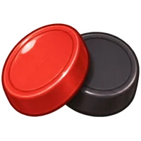
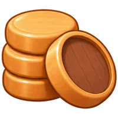

軍棋

暗棋
大砲對轟
帥
軍棋對戰
將
32 顆棋全部蓋著：輪到你就
翻一顆
或
走一格
。第一顆翻到什麼顏色，你就是那一方。
大吃小（兵卒可以吃帥將）；炮要
隔一顆
才能吃。對方的棋被吃光就贏了！
輪到你：可以先
開車
移動一下，再調
角度
和
力道
發射砲彈（也可以直接在畫面上拖）。
注意上面的
風向
！先把對方的血打到 0 就贏了。
🏠 建立房間（我先下・紅方）
加入
👥 同一台平板兩人輪流下
邀請同學對戰
等同學加入…
----
把房號告訴要一起下的同學，他在「加入」輸入房號就可以開始。
取消
🔁 再來一局（換邊）
離開
邀請誰一起下
軍棋
？
軍棋
暗棋
大砲對轟
綠色的同學現在在平台上，按一下就會邀請他
取消
 邀請誰一起下軍棋？
邀請誰一起下軍棋？